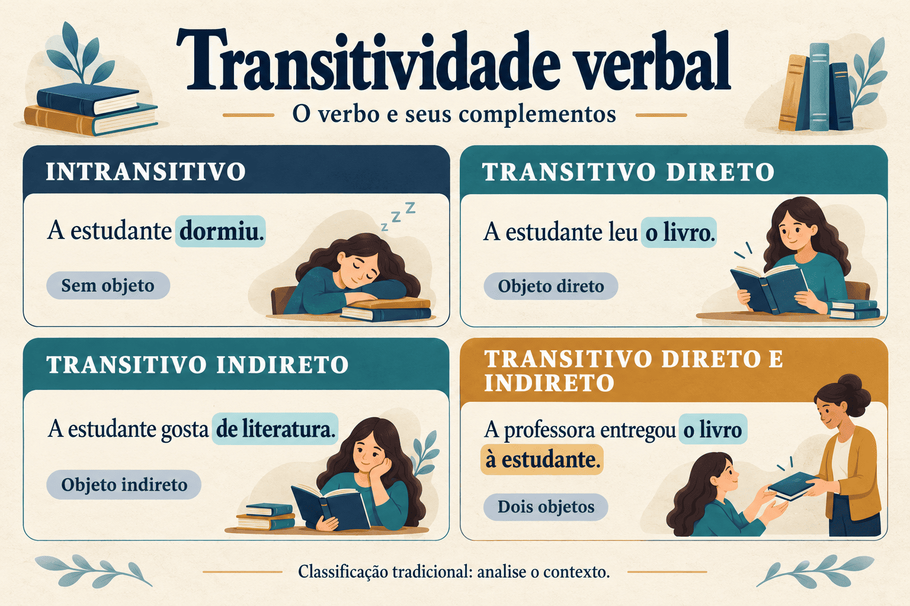

Transitividade verbal: classificação gramatical e funcionamento no contexto
Um mesmo verbo pode aparecer em estruturas diferentes: “A estudante escreveu uma resenha” e “A estudante escreve todas as manhãs”. No primeiro enunciado, o objeto identifica o texto produzido; no segundo, a atividade de escrever é apresentada sem um objeto explícito. Essa diferença mostra por que o estudo da transitividade verbal precisa considerar o emprego do verbo, o sentido da construção e a situação comunicativa.
A classificação em verbos intransitivos, transitivos diretos, transitivos indiretos e transitivos diretos e indiretos oferece uma referência inicial importante. Entretanto, ela se torna pouco explicativa quando é aplicada como uma lista de etiquetas permanentes, sem investigar como os participantes e os complementos se organizam.
Este artigo apresenta os critérios da análise tradicional, discute seus limites e examina casos de objeto não expresso, complementação preposicionada e alternância de construção. Os exemplos são próprios e dão continuidade aos conteúdos sobre predicação e valência verbal, classes e funções sintáticas e tipos de predicado.

O que é transitividade verbal?
Na descrição tradicional, a transitividade verbal diz respeito ao modo como um verbo se relaciona com seus objetos em determinada construção. Investiga-se se há complementação por objeto e, quando ela ocorre, como se estabelece a ligação entre o verbo e o constituinte que o complementa.
Isso não equivale a perguntar apenas se uma frase parece “completa”. Um enunciado pode ser compreensível porque o contexto recupera um participante não expresso. Também pode conter uma expressão importante para o diálogo que não funciona como objeto.
Completude comunicativa e estrutura gramatical
Pergunta: “Você revisou o artigo?”
Resposta: “Revisei.”
A resposta é suficiente no diálogo, mas o texto revisado continua fazendo parte da interpretação. A ausência do objeto explícito não elimina automaticamente a relação de complementação.
Para analisar a transitividade, é necessário observar a acepção verbal, a construção, os constituintes relacionados ao verbo e as informações recuperáveis no discurso.
As quatro classificações tradicionais
O quadro apresenta os rótulos mais frequentes no ensino. Eles se referem aos empregos exemplificados, e não a uma classificação única de cada verbo em qualquer contexto.
| Classificação | Organização | Exemplo | Objeto ou objetos |
|---|---|---|---|
| Intransitivo (VI) | Não se combina com objeto no emprego analisado. | A estudante dormiu. | Não há objeto. |
| Transitivo direto (VTD) | Combina-se com objeto direto. | A professora revisou o artigo. | “O artigo”. |
| Transitivo indireto (VTI) | Combina-se com objeto indireto introduzido por preposição selecionada. | A estudante gosta de literatura. | “De literatura”, na nomenclatura tradicional ampla. |
| Transitivo direto e indireto (VTDI) | Combina-se com objeto direto e objeto indireto. | A professora entregou o livro à estudante. | “O livro” e “à estudante”. |
Gramáticas contemporâneas podem separar objeto indireto e complemento oblíquo. Nesse recorte, um destinatário introduzido por “a” pode receber tratamento distinto do complemento de “gostar de”. A tabela utiliza a terminologia escolar ampla; comparar modelos exige verificar como cada autor define os termos.
Verbos intransitivos: ausência de objeto não significa ausência de informação adicional
Em um emprego intransitivo, o verbo não apresenta objeto. Isso não impede a presença de modificadores que localizam ou caracterizam o evento.
- “A estudante dormiu.”
- “A estudante dormiu durante a tarde.”
- “A estudante dormiu tranquilamente durante a tarde.”
As expressões “durante a tarde” e “tranquilamente” acrescentam informações de tempo e modo. Nos exemplos, não constituem objetos do verbo “dormir”.
Também não se deve confundir intransitividade com ausência de argumentos. Em “A estudante dormiu”, o participante realizado como sujeito integra a predicação. Na descrição valencial adotada no conteúdo anterior, esse emprego é monovalente, embora seja tradicionalmente chamado de intransitivo.
Uma oração pode ser pouco informativa e continuar gramatical
Se alguém pergunta “Quando a estudante dormiu?”, responder apenas “A estudante dormiu” pode não satisfazer a pergunta. Isso não transforma a expressão temporal em objeto obrigatório. A adequação ao diálogo e a relação de complementação verbal precisam ser avaliadas separadamente.
Verbos transitivos diretos e objeto direto
Em um emprego transitivo direto, o verbo se combina com um objeto direto. Nos casos mais simples, esse objeto não é introduzido por uma preposição exigida pelo verbo.
Análise de uma construção transitiva direta
“A professora analisou os resultados.”
- Sujeito: “a professora”.
- Verbo transitivo direto nesse emprego: “analisou”.
- Objeto direto: “os resultados”.
- Núcleo do objeto: “resultados”.
O objeto é o grupo inteiro, não apenas seu núcleo. Na escrita formal, a retomada por pronome pode produzir: “A professora os analisou”.
O objeto direto também pode ser uma oração. Em “A pesquisadora afirmou que os dados eram suficientes”, a oração “que os dados eram suficientes” expressa o conteúdo da afirmação e recebe, na análise tradicional, a função de objeto direto.
A presença de um substantivo depois do verbo não basta para identificar um objeto. Em “Chegaram os estudantes”, “os estudantes” é sujeito posposto. Em “A professora é pesquisadora”, “pesquisadora” é predicativo do sujeito.
Verbos transitivos indiretos e complementação preposicionada
Na terminologia tradicional ampla, um verbo é transitivo indireto quando se combina com um objeto indireto ligado por preposição selecionada pelo verbo.
- “A estudante gosta de literatura.”
- “A pesquisa depende de financiamento.”
- “A professora confia nos estudantes.”
As preposições participam de relações de regência: gostar de, depender de, confiar em. Em “nos estudantes”, a forma “nos” reúne a preposição “em” e o artigo “os”.
Entretanto, nem todo constituinte preposicionado depois de um verbo é objeto indireto. Em “A professora revisou o artigo durante a tarde”, o grupo temporal modifica o evento de revisão. Ele não é selecionado como objeto por “revisar”.
Sousa (2011) discute justamente a insuficiência de distinguir complementos apenas pela presença ou ausência de preposição. Essa marca formal precisa ser relacionada à estrutura e ao funcionamento do verbo na construção.
Verbos transitivos diretos e indiretos: dois objetos na mesma construção
No emprego transitivo direto e indireto, o verbo se combina com dois objetos. Um exemplo recorrente envolve transferência de um tema a um destinatário.
Uma construção com objeto direto e indireto
“A bibliotecária entregou a revista ao pesquisador.”
- Sujeito: “a bibliotecária”.
- Objeto direto: “a revista”.
- Objeto indireto: “ao pesquisador”.
- Participantes da transferência: quem entrega, o que é entregue e a quem se entrega.
“Ao” reúne a preposição “a” e o artigo “o”. A construção expressa um destinatário, e não apenas uma circunstância acrescentada ao evento.
Em um diálogo sobre o pesquisador, a bibliotecária poderia responder “Já entreguei a revista”. O destinatário não estaria expresso nessa resposta. Isso exige examinar o contexto e a possibilidade de recuperação do participante, sem concluir automaticamente que o esquema de transferência deixou de envolver um destinatário.
Um mesmo verbo pode ter transitividades diferentes
A construção pode mudar com a acepção do verbo ou com a forma de apresentar o evento. Dois contrastes ajudam a separar essas possibilidades.
1. Mudança de acepção e de regência
Assistir no sentido de ver
“A turma assistiu ao documentário.”
Na regência tradicional recomendada para esse sentido na escrita formal, “assistir” se combina com complemento introduzido por “a” e é classificado como transitivo indireto.
Assistir no sentido de prestar assistência
“A equipe assistiu os pacientes.”
Nesse emprego de prestar assistência, a construção transitiva direta é admitida na descrição tradicional. “Os pacientes” é objeto direto.
O português brasileiro também apresenta “assistir o filme” no sentido de ver. Uma descrição do uso registra esse padrão; uma orientação para situações que exigem a regência tradicional pode recomendar “assistir ao filme”. Descrição e prescrição respondem a objetivos diferentes e precisam ser explicitadas.
2. Alternância de construção
Construção transitiva
“O funcionário abriu a porta.”
Há um sujeito que desencadeia a abertura e um objeto direto que corresponde à entidade que muda de estado.
Construção intransitiva
“A porta abriu.”
A mudança de estado é apresentada sem um causador expresso como argumento separado. “A porta” ocupa a função de sujeito.
O segundo par não consiste apenas em trocar uma preposição. Trata-se de uma alternância na organização dos participantes. Não se deve estender essa possibilidade a todos os verbos: cada padrão exige investigação.
Objeto não expresso: uso absoluto e recuperação pelo contexto
A ausência de objeto explícito admite situações diferentes. Convém distinguir a apresentação de uma atividade de uma retomada de um referente já conhecido.
Atividade apresentada de forma geral
“A estudante escreve todas as manhãs.”
O enunciado caracteriza uma prática habitual, sem identificar um texto específico. Na descrição escolar, pode-se reconhecer um emprego intransitivo ou absoluto de “escrever”, conforme a terminologia adotada.
Objeto recuperável do diálogo
“Você escreveu a resenha?” — “Escrevi.”
A resposta retoma a resenha mencionada na pergunta. A possibilidade de objeto nulo no português brasileiro permite descrever essa relação sem exigir a repetição do grupo nominal.
Essas situações não devem ser reunidas sob uma regra segundo a qual “todo verbo sem objeto escrito é intransitivo”. Também não é necessário postular um mesmo tipo de objeto silencioso para todo emprego absoluto. A análise depende do modelo e das propriedades do exemplo.
Na escrita, um participante pode ser facilmente recuperável ou permanecer ambíguo. O trabalho de revisão consiste em verificar a continuidade referencial: a informação que funciona no diálogo pode precisar ser explicitada em um parágrafo dirigido a leitores sem aquele contexto.
Por que a preposição não resolve a análise sozinha?
A preposição aparece em diferentes relações. Além de complementos verbais, pode introduzir modificadores de evento, complementos de nomes e outras estruturas.
| Exemplo | Expressão destacada | Relação no exemplo |
|---|---|---|
| A pesquisa depende de recursos. | De recursos | Complementação selecionada pelo verbo “depender”. |
| A professora revisou o texto durante a tarde. | Durante a tarde | Modificação temporal do evento. |
| A necessidade de recursos aumentou. | De recursos | Complementação do nome “necessidade”, dentro do sujeito. |
| A professora colocou o livro na estante. | Na estante | Localização final integrante do esquema de “colocar”, no sentido de posicionar. |
O último caso é especialmente instrutivo: uma expressão espacial pode integrar a complementação do predicador. Algumas gramáticas utilizam rótulos como complemento locativo ou complemento adverbial. O fato de não caber facilmente na lista escolar de objetos não autoriza tratá-la automaticamente como adjunto livre.
Objeto direto preposicionado
A tradição também reconhece casos de objeto direto preposicionado. Em “Amar a Deus”, por exemplo, a presença de “a” não obriga a classificar o constituinte como objeto indireto. O emprego envolve propriedades da construção e do objeto.
Portanto, a regra inicial “direto sem preposição, indireto com preposição” descreve exemplos prototípicos, mas não funciona como definição suficiente para todos os casos.
Transitividade, regência e valência: diferenças de alcance
| Conceito | Pergunta central | Aplicação |
|---|---|---|
| Transitividade tradicional | Como o verbo se relaciona com seus objetos? | “Entregar” é transitivo direto e indireto na construção com tema e destinatário expressos. |
| Regência | Que formas de ligação e dependência são estabelecidas? | “Depender” seleciona complemento com “de”. |
| Valência | Que número e tipo de argumentos participam do esquema? | O esquema de “entregar” inclui quem entrega, o tema e o destinatário. |
Uma construção com verbo intransitivo pode ter um argumento realizado como sujeito. Por outro lado, uma expressão argumental não precisa receber o nome tradicional de objeto. As diferenças entre os conceitos explicam por que os números da valência não correspondem diretamente à contagem de objetos.
Procedimentos de análise e seus limites
As perguntas “o quê?” e “de quê?” podem ajudar a explorar uma construção, mas não identificam funções de modo infalível. Respostas a perguntas podem corresponder a sujeitos, predicativos e adjuntos, além de objetos.
- Retomada pronominal: “A professora revisou o artigo” pode ser retomado por “A professora o revisou”. É uma evidência útil para o objeto direto.
- Passiva: “A professora revisou o artigo” admite “O artigo foi revisado pela professora”. O objeto da ativa passa a sujeito na passiva.
- Seleção da preposição: a relação entre “depender” e “de” auxilia a distinguir seu complemento de um modificador temporal.
- Comparação contextual: verificar o que permanece recuperável quando um constituinte não aparece ajuda a compreender objetos nulos.
Nenhum procedimento deve ser aplicado isoladamente. A formação da passiva sofre restrições lexicais e interpretativas; nem todo complemento preposicionado admite retomada por “lhe”; e a omissão pode alterar a leitura do verbo. Os testes precisam preservar, tanto quanto possível, a acepção e a relação investigadas.
O pronome “lhe” não substitui todo complemento com preposição
Em “A professora entregou o livro à estudante”, “à estudante” pode ser retomado por “lhe” na escrita formal. Já “de literatura”, em “A estudante gosta de literatura”, não admite essa substituição com preservação da mesma construção. Essa diferença também ajuda a compreender por que certas gramáticas distinguem objeto indireto e complemento oblíquo.
Transitividade em perspectivas funcionais
Além da classificação escolar, há abordagens em que a transitividade é investigada como propriedade da oração e do discurso, com graus relacionados a diferentes fatores semânticos. Nesse recorte, examinam-se, por exemplo, o número de participantes, o caráter dinâmico do evento, sua delimitação e o grau de afetação do objeto.
Compare “A estudante observou o cartaz” e “A estudante rasgou o cartaz”. Na análise tradicional, os dois empregos são transitivos diretos. Uma investigação semântica pode distinguir o grau de mudança sofrida pelo objeto: observar não implica destruí-lo, enquanto rasgar envolve alteração de sua integridade.
A comparação não invalida a classificação tradicional. Mostra que a mesma palavra transitividade pode nomear objetos de investigação de alcance diferente. Ao ler um trabalho acadêmico, é necessário identificar o quadro teórico antes de comparar suas conclusões com as de um manual escolar.
Exemplo completo de análise
Enunciado em análise
“A professora enviou os comentários aos estudantes ontem.”
1. Sujeito: “a professora”.
2. Verbo no contexto: “enviou”, em uma construção que expressa envio de conteúdo a destinatários.
3. Objeto direto: “os comentários”, com núcleo em “comentários”.
4. Objeto indireto: “aos estudantes”, que identifica os destinatários.
5. Adjunto adverbial: “ontem”, que localiza temporalmente o evento.
6. Transitividade tradicional: transitivo direto e indireto.
7. Esquema valencial: três argumentos — quem envia, o que é enviado e a quem se envia.
A existência de “ontem” não introduz um terceiro objeto nem um quarto argumento selecionado nesse esquema. Seu papel é modificar temporalmente a predicação.
Um roteiro para analisar o verbo no contexto
- Leia o enunciado e seu contexto. Identifique o sentido do verbo e a informação em discussão.
- Localize o sujeito. Evite classificar como objeto um sujeito posposto.
- Delimite os constituintes. Separe grupos completos de seus núcleos e modificadores internos.
- Investigue a complementação. Observe quais expressões se relacionam ao esquema do predicador.
- Examine a preposição sem absolutizá-la. Distinga regência verbal, complementação nominal e adjunção.
- Considere participantes não expressos. Verifique se há recuperação contextual ou apresentação genérica da atividade.
- Classifique e justifique. Indique o emprego analisado e a terminologia adotada.
Erros comuns no estudo da transitividade
- Tratar a classificação como permanente: acepções e construções diferentes podem apresentar padrões distintos.
- Confundir importância comunicativa com objeto: uma informação temporal pode ser central no diálogo sem funcionar como complemento verbal.
- Classificar todo grupo preposicionado como objeto indireto: a mesma forma pode ocorrer em adjuntos e complementos de nomes.
- Considerar todo verbo sem objeto expresso intransitivo: o objeto pode estar recuperável no contexto.
- Confundir predicativo com objeto: “pesquisadora”, em “A professora é pesquisadora”, não é objeto direto.
- Ignorar o modelo descritivo: objeto indireto, complemento oblíquo e complemento locativo não são definidos igualmente em todas as gramáticas.
Aplicações ao ensino e à escrita acadêmica
Uma atividade de análise pode apresentar um pequeno diálogo e pedir aos estudantes que expliquem o que o objeto não expresso retoma. Outra possibilidade é comparar um mesmo verbo em duas construções, solicitando a descrição dos participantes e da forma de complementação.
Na escrita acadêmica, conhecer os padrões de regência ajuda a organizar referências e complementos com clareza. Entretanto, revisar não significa preencher mecanicamente todos os argumentos: a repetição excessiva também pode prejudicar o encadeamento do texto. O critério é avaliar se o leitor recupera a relação pretendida.
A classificação ganha valor quando contribui para interpretar o uso. Mais do que reconhecer siglas, o estudante precisa explicar por que determinada expressão é complemento, que informação ela introduz e como sua presença ou ausência interfere na construção.
Questões para estudo e reflexão
Questão 1
Classifique a transitividade em “A estudante dormiu durante a tarde” e explique a função da expressão temporal.
Ver resposta comentada
“Dormiu” é intransitivo nesse emprego. “Durante a tarde” funciona como adjunto adverbial de tempo e não como objeto indireto. A presença de uma expressão preposicionada não transforma automaticamente o verbo em transitivo.
Questão 2
Em “A professora enviou os comentários aos estudantes ontem”, identifique os objetos e diferencie a contagem dos objetos da contagem dos argumentos.
Ver resposta comentada
“Os comentários” é objeto direto, e “aos estudantes” é objeto indireto. Há dois objetos. No esquema valencial adotado, o sujeito “a professora” também realiza um argumento, totalizando três. “Ontem” é adjunto temporal e não integra essa contagem argumental.
Questão 3
No diálogo “Você revisou o relatório?” — “Revisei”, por que a ausência de objeto explícito na resposta não basta para afirmar que “revisar” se tornou intransitivo?
Ver resposta comentada
Porque o relatório é recuperável da pergunta e permanece na interpretação do evento. Uma análise de objeto nulo pode descrever essa relação. A ausência de uma expressão na superfície não prova que a construção deixou de envolver complementação.
Questão 4
Compare “A pesquisa depende de recursos” e “A necessidade de recursos aumentou”. Por que a expressão “de recursos” não estabelece a mesma relação nas duas orações?
Ver resposta comentada
Na primeira, “de recursos” complementa o verbo “depender”. Na segunda, complementa o nome “necessidade” e integra o sujeito. A sequência preposicionada tem a mesma forma, mas se relaciona a núcleos diferentes. Não se deve atribuir transitividade indireta a “aumentou” por causa desse termo interno ao sujeito.
Questão 5
Explique o contraste entre “O funcionário abriu a porta” e “A porta abriu”. A mudança consiste apenas na retirada do sujeito da primeira oração?
Ver resposta comentada
Não. Na primeira, “abrir” ocorre em uma construção transitiva direta, com causador como sujeito e “a porta” como objeto. Na segunda, a entidade que muda de estado ocupa a função de sujeito e não há objeto. A alternância envolve reorganização dos participantes, não apenas apagamento de uma expressão.
Questão 6
Por que “A professora colocou o livro na estante” exige cautela diante da regra “expressão de lugar é sempre adjunto”?
Ver resposta comentada
No sentido de posicionar algo, “colocar” estabelece uma relação com quem coloca, o objeto e sua localização final. “Na estante” integra esse esquema e pode ser analisado como complemento locativo. A classificação específica depende do modelo, mas o sentido espacial não basta para tratá-lo como adjunto livre.
Resumo de transitividade verbal
- A transitividade tradicional descreve as relações entre o verbo e seus objetos em determinada construção.
- Os rótulos mais frequentes são intransitivo, transitivo direto, transitivo indireto e transitivo direto e indireto.
- A análise depende da acepção, da construção e do contexto.
- Um objeto pode ser realizado por um grupo nominal ou por uma oração.
- A preposição não distingue todas as funções de forma automática.
- Objetos não expressos precisam ser investigados considerando recuperação contextual e usos absolutos.
- Transitividade, regência e valência têm alcances diferentes.
- Perspectivas funcionais também investigam propriedades semânticas e discursivas da transitividade.
Perguntas frequentes sobre transitividade verbal
O que é transitividade verbal?
Na análise tradicional, transitividade verbal descreve o modo como um verbo se relaciona com seus objetos em determinada construção. A investigação considera a presença e a forma da complementação.
Um mesmo verbo pode ter transitividades diferentes?
Sim. Acepções e construções distintas podem apresentar padrões diferentes. Em “O funcionário abriu a porta”, há construção transitiva direta; em “A porta abriu”, há construção intransitiva.
Todo termo com preposição é objeto indireto?
Não. Expressões preposicionadas também podem ser adjuntos, complementos de nomes e outros constituintes. Sua função depende da relação com a estrutura, não apenas da presença de uma preposição.
Qual é a diferença entre objeto direto e indireto?
Na descrição tradicional ampla, o objeto direto se liga ao verbo sem preposição regencial obrigatória nos casos prototípicos. O objeto indireto é introduzido por uma preposição selecionada. Existem casos especiais e modelos que distinguem objetos indiretos de complementos oblíquos.
Se o objeto não aparece, o verbo é sempre intransitivo?
Não. O objeto pode estar recuperável pelo contexto, como na resposta “Revisei” à pergunta “Você revisou o artigo?”. Usos absolutos e objetos nulos exigem análise contextual e critérios explícitos.
Um verbo intransitivo pode ter adjuntos?
Sim. Em “A estudante dormiu durante a tarde”, a expressão temporal modifica o evento sem funcionar como objeto. A presença de adjuntos não altera, por si só, a classificação intransitiva desse emprego.
Transitividade e valência são a mesma coisa?
Não necessariamente. A transitividade tradicional destaca os objetos. A descrição valencial considera o número e o tipo de argumentos, incluindo o sujeito quando ele realiza um participante argumental.
Uma oração pode funcionar como objeto direto?
Sim. Em “A pesquisadora afirmou que os dados eram suficientes”, a oração “que os dados eram suficientes” expressa o conteúdo afirmado e funciona como objeto direto na análise tradicional.
Considerações finais
O estudo da transitividade verbal permite compreender como um verbo se combina com seus complementos e como essas relações participam da interpretação. A classificação tradicional oferece um ponto de partida, mas precisa ser acompanhada de critérios e de exemplos contextualizados.
Ao distinguir objetos de adjuntos, investigar participantes implícitos e comparar construções, o estudante passa da memorização de etiquetas à explicação do funcionamento da língua. Esse percurso contribui para a formação acadêmica, para o ensino e para a revisão consciente dos textos.
Conteúdos relacionados
- Predicado e predicação: estruturas verbais, nominais e verbo-nominais
- Predicação e valência verbal: a organização dos argumentos na oração
- Sujeito, tópico e agente: por que esses conceitos não são equivalentes
- Classes de palavras e funções sintáticas: diferenças e relações
- Sintagmas e constituintes: como se organiza a estrutura da oração
- Sintaxe — Índice de conteúdos
Referências
- KENEDY, Eduardo; OTHERO, Gabriel de Ávila. Para conhecer sintaxe. São Paulo: Contexto, 2018. Disponível em: página da editora.
- MIOTO, Carlos; FIGUEIREDO SILVA, Maria Cristina; LOPES, Ruth. Novo manual de sintaxe. São Paulo: Contexto, 2013. Disponível em: página da editora.
- SOUSA, Mario Cesar da Silva. A transitividade verbal e o papel da preposição. Vernaculum, v. 3, n. 3, 2011. Disponível em: página do artigo.
- MOURA, Heronides; MILIORINI, Rafaela. Para compreender uma intuição: critérios para distinguir argumentos de adjuntos verbais. ALFA: Revista de Linguística, São Paulo, v. 62, n. 3, 2018. DOI: 10.1590/1981-5794-1811-6.
Explore Outros Conteúdos
Continue seus estudos acessando outras seções do site Mestre Kira: